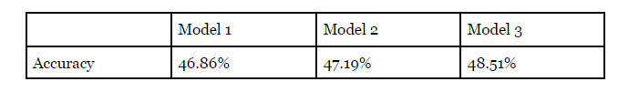

Model 2 is the best model as It has the highest accuracy.
 Model 1 is setseed(100), the accuracy is 46.86%. When I run the code more than 1 time the
accuracy will not change. But Model 2 and Model 3 are setseed(1,2,3,4), the model is random
so when I run the code more than 1 time the accuracy will difference.
R Script Listing
After finishing this project, first of all, we think the most effective way is to use the R
language to optimize those data, because manual optimization takes a long time. For
example, it takes 1 hour to manually remove garbled codes, but it only takes a few minutes to
complete with R.
The second is to keep trying and choose different data types to model the results, because the
more you choose, the better the results. Perhaps it is better to choose five or six types that are
less relevant than three or four types that are more relevant.
The third is team communication, which is very important, because we have to work together
and work together to achieve the best results.